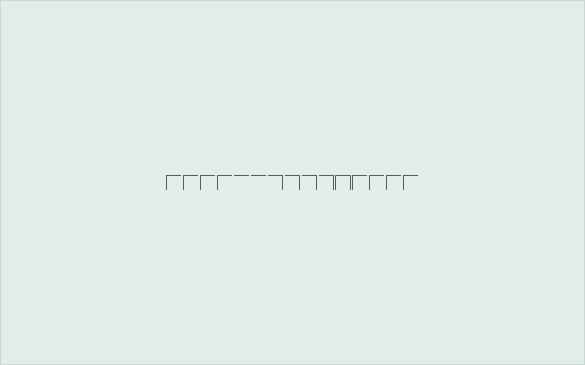
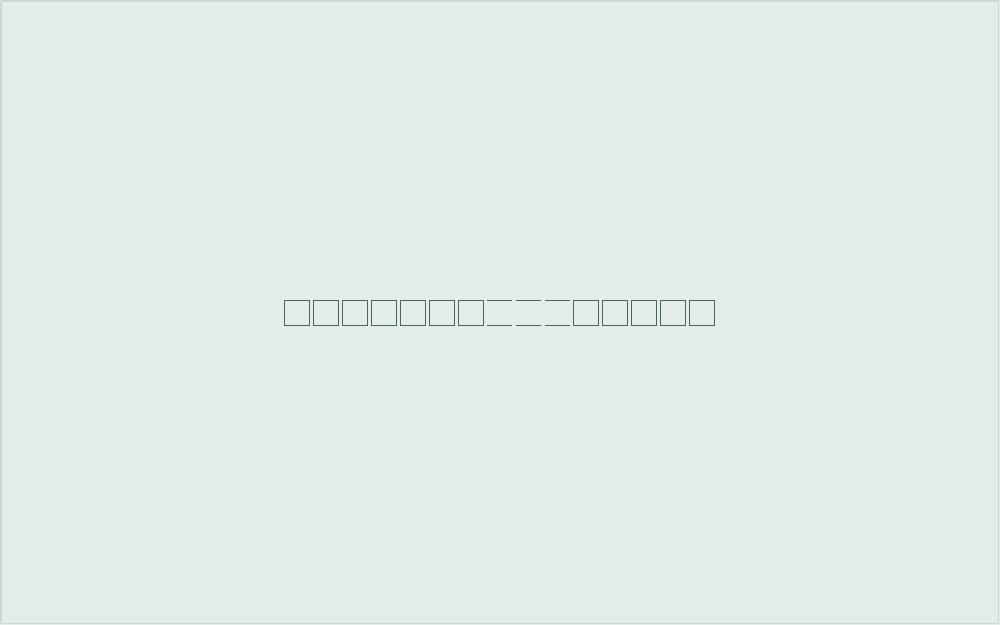

- Coulissant وOuvrant وPorte وVolet roulant وCuisine وComposite: حساب القص تلقائيًا.
- تحسين قص البارات والألواح: هدر أقل.
- عرض ثمن احترافي PDF بشعار ورشتك.
- أثمانك ومورّدوك، تُدخلها مرة واحدة.
- يعمل بدون إنترنت: بياناتك تبقى في حاسوبك.
تجربة مجانية لمدة 7 أيام.
تحتاج وقتًا أطول؟ تواصل معنا عبر واتساب لتمديد تجربتك مجانًا.
مدّد تجربتك عبر واتسابالتثبيت
- حمّل الملف CutaluPro-Setup-0.9.3.exe.
- افتح الملف. إذا ظهرت رسالة «Windows a protégé votre ordinateur»، انقر على Informations complémentaires ثم على Exécuter quand même. تظهر هذه الرسالة للبرامج الحديثة التي لم تُوقَّع رقميًا بعد.
- أكمل التثبيت، ثم افتح Cutalu Pro من قائمة ابدأ.